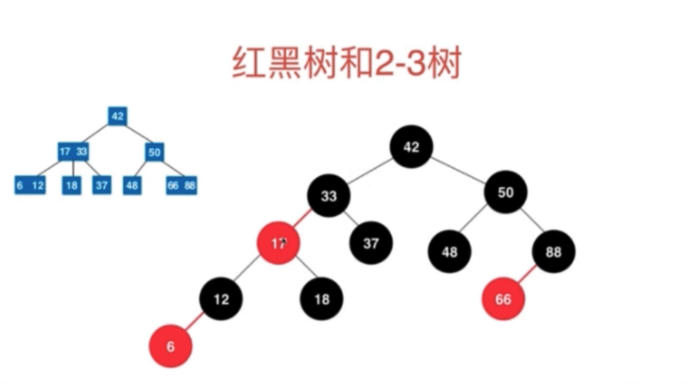
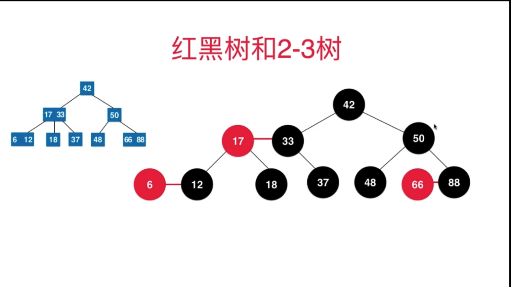
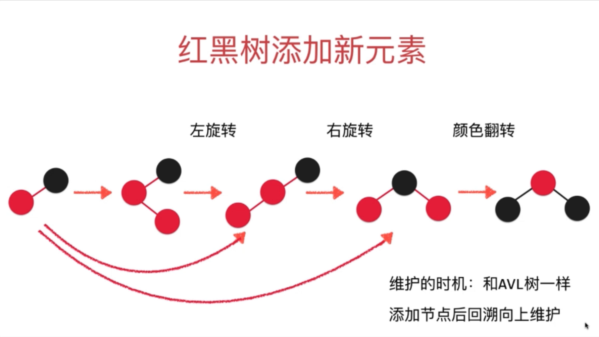
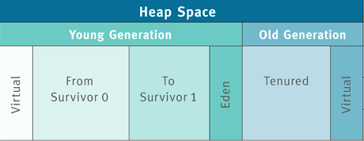
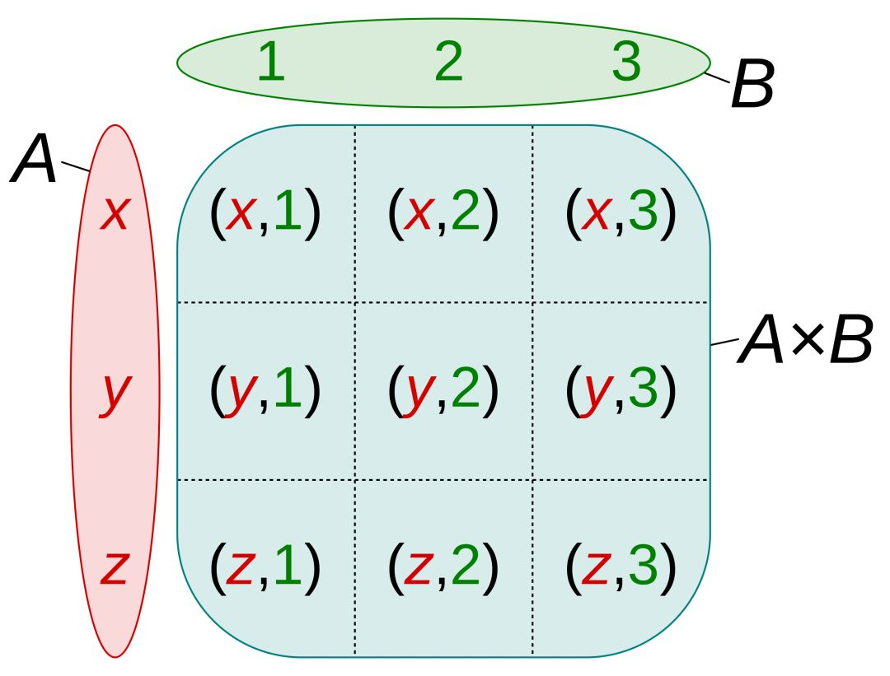
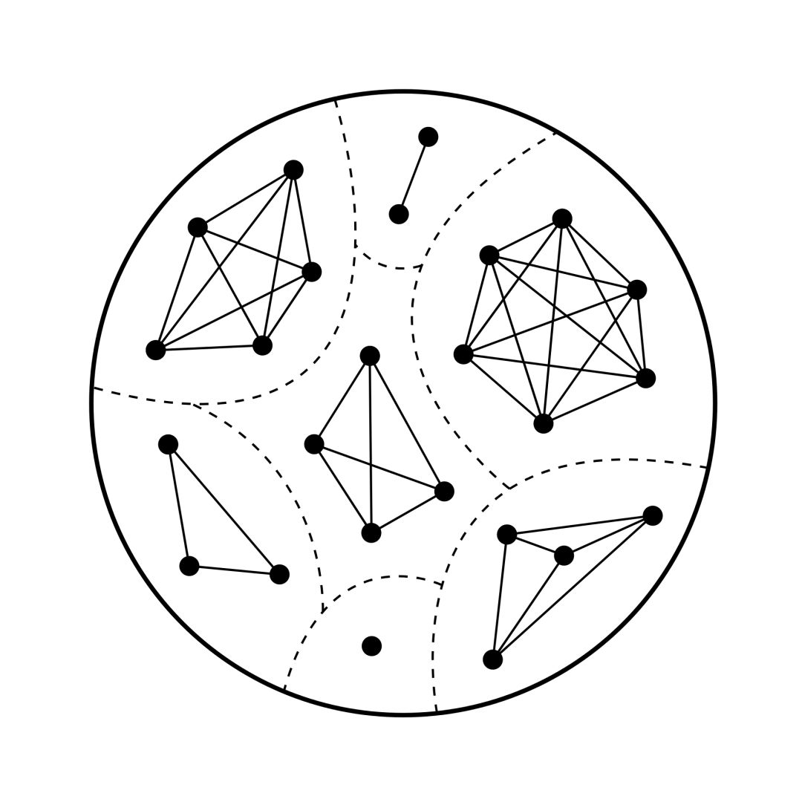
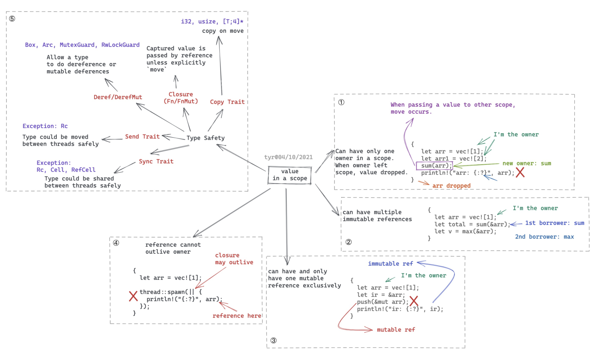

常见的数据结构
数组，栈，队列，链表， 堆， 二分搜索树，红黑树，线段树，avl 树，并查集的 java 实现。
数组
定义
在 Java 中数组定义为承载某种类型元素可重复集合。
数据结构
public class Array<E> {
/**
* 数组内容
*/
private E[] data;
/**
* 数组中元素的个数
*/
private int size;
}
capacity 为数据的容量。
主要方法
添加
/**
* 在指定索引位置添加元素
*/
public void add(int index, E e) {
if (index < 0 || index > size)
throw new IllegalArgumentException("AddLast Failed! Required index >= 0 || index <= size");
if (size == data.length)
resize(2 * data.length);
for (int i = size - 1; i >= index; i--)
data[i + 1] = data[i];
data[index] = e;
size++;
}
删除
/**
* 删除index索引处的值，返回该值
*/
public E remove(int index) {
if (index < 0 || index >= size)
throw new IllegalArgumentException("AddLast Failed! Required index >= 0 || index < size");
E ret = data[index];
for (int i = index + 1; i < size; i++)
data[i - 1] = data[i];
size--;
data[size] = null;
if (size == data.length / 4 && data.length / 2 != 0) //lazy
resize(data.length / 2);
return ret;
}
更改容量
private void resize(int newCapacity) {
E[] newData = (E[]) new Object[newCapacity];
for (int i = 0; i < size; i++)
newData[i] = data[i];
data = newData;
}
查找 e 对应的索引
/**
* 寻找元素e的索引，不存在返回-1
*/
public int find(E e) {
for (int i = 0; i < size; i++) {
if (data[i].equals(e))
return i;
}
return -1;
}
删除数组中所有为 e 的元素
/**
* 删除所有为e的元素
*
* @param e
*/
public void removeAllElement(E e) {
int index = find(e);
while (index != -1) {
remove(index);
index = find(e);
}
}
时间复杂度分析
- 增：O(n)
- 删：O(n)
- 改：已知索引 O(1); 位置索引 O(n)
- 查：已知索引 O(1); 位置索引 O(n)
均摊时间负载度
假设 capacity = n, n+1 次 addLast(), 触发 resize(), 总共进行 2n+1 次基本操作， 平均每次 addLast() 操作，进行 2 次基本操作。 时间复杂度为 O(1)。 同理， removeLast() 操作时间负责也是 O(n)。
复杂度震荡
在数组零界点反复进行 addLast() 后 接着 removeLast()， 每一次都会触发 resize()
这时时间复杂度为 O(n*n)
出现问题的原因： removeLast() 时 resize() 过于着急 (Eager) 解决方案： Lazy 当 size == capacity / 4 时， 才将 capacity 减半。
Stack
- 栈也是一种线性结构
- 相比数组，栈对应的操作是数组的子集
- 只能从一段添加元素，也只能从一段取出元素
- 这一端称为栈顶
- 栈是一种 后进先出 的数据结构
- Last In First Out(LIFO)
Java 中的实现-使用 Deque
Deque<Integer> stack = new ArrayQueue<>();
栈的应用
- 无处不在的 Undo 操作（撤销）
- 程序调用的系统栈
栈的接口
public interface Stack<E> {
void push(E e);
E pop();
E peek();
int getSize();
boolean isEmpty();
}
Queue
- 队列也是一种线性结构
- 相比数组，栈对应的操作是数组的子集
- 只能从一端（队尾）添加元素，只能从 另一端（队首）取出元素
- 队列是一种先进先出的数据结构（先到先得）
- First In First Out (FIFO)
队列的接口
public interface Queue<E> {
void enqueue(E e);
E dequeue();
E getFront();
int getSize();
boolean isEmpty();
}
循环队列
- 将数组队列(ArrayQueue)的
dequeue时间复杂度O(n)优化成O(1) - 维护
front和tail两个变量 front == tail时队列为空(tail + 1) % capacity == front时队列满- capacity 中，浪费了一个空间
循环队列数据结构
public class LoopQueue<E> implements Queue<E> {
private E[] data;
private int front, tail;
private int size; // 可实现无size版本
}
循环队列主要方法
构造器
public LoopQueue(int capacity) {
data = (E[]) new Object[capacity + 1]; // loopQueue中会有一个空间浪费
front = 0;
tail = 0;
size = 0;
}
isEmpty(), getCapacity(), getFront()
@Override
public boolean isEmpty() {
return tail == front;
}
public int getCapacity() {
return data.length - 1;
}
@Override
public E getFront() {
if (isEmpty())
throw new IllegalArgumentException("Queue is empty");
return data[front];
}
enqueue()
@Override
public void enqueue(E e) {
if ((tail + 1) % data.length == front) // 数组满了的情况下
resize(getCapacity() * 2);
data[tail] = e;
tail = (tail + 1) % data.length;
size++;
}
dequeue()
@Override
public E dequeue() {
if (isEmpty())
throw new IllegalArgumentException("Cannot dequeue from an empty queue");
E ret = data[front];
data[front] = null;
front = (front + 1) % data.length;
size--;
if (size == getCapacity() / 4 && getCapacity() / 2 != 0)
resize(getCapacity() / 2);
return ret;
}
resize()
private void resize(int newCapacity) {
E[] newData = (E[]) new Object[newCapacity + 1];
for (int i = 0; i < size; i++)
newData[i] = data[(i + front) % data.length];
data = newData;
front = 0;
tail = size;
}
toString()
@Override
public String toString() {
StringBuilder res = new StringBuilder();
res.append(String.format("LoopQueue: size = %d, capacity = %d , front = %d, tail = %d\n", size, getCapacity(), front, tail));
res.append("LoopQueue: ");
res.append("front [");
for (int i = front; i != tail; i = (i + 1) % data.length) { // 另一种遍历
res.append(data[i]);
if ((i + 1) % data.length != tail)
res.append(", ");
}
res.append("] tail");
return res.toString();
}
栈，队列时间复杂度分析
| 结构 | 方法 | 时间复杂度 |
|---|---|---|
| ArrayStack | void push(E) | O(1) 均摊 |
| E pop(E) | O(1) 均摊 | |
| E peek(E) | O(1) | |
| int getSize(E) | O(1) | |
| boolean isEmpty(E) | O(1) | |
| ArrayQueue | void enquque(E) | O(1) 均摊 |
| E dequque() | O(n) | |
| E getFront() | O(1) | |
| int getSize() | O(1) | |
| boolean isEmpty() | O(1) | |
| LoopQueue | void enquque(E) | O(1) 均摊 |
| E dequque() | O(1) 均摊 | |
| E getFront() | O(1) | |
| int getSize() | O(1) | |
| boolean isEmpty() | O(1) |
linkedList
真正的动态数据结构
- 最简单的动态数据结构
- 更深入的理解引用（或者指针）
- 更深入的理解递归
- 辅助组成其他数据结构
- 优点：真正的动态，不需要处理固定容量的问题
- 缺点：丧失了随机访问的能力
- 链表的性质符合栈的特点，用于实现栈, 链表头为栈顶
- 通过定义尾指针可以实现队列
数据结构
使用私有的内部 node 类
public class LinkedList<E> {
private class Node {
public E e;
public Node next;
public Node(E e, Node next) {
this.e = e;
this.next = next;
}
public Node(E e) {
this(e, null);
}
public Node() {
this(null, null);
}
@Override
public String toString() {
return e.toString();
}
}
private Node dummyhead; // 虚拟头节点
private int size;
}
虚拟头节点
为了统一头节点与其他节点的操作，其值为null
linkedList add()
/**
* 在链表的index（0-base）位置添加新的元素e
* 在链表中不是一个常用的操作，练习用
*
* @param index
* @param e
*/
public void add(int index, E e) {
if (index < 0 || index > size)
throw new IllegalArgumentException("Add failed. Illegal index");
Node prev = dummyHead;
for (int i = 0; i < index; i++)
prev = prev.next;
// Node node = new Node(e);
// node.next = prev.next;
// prev.next = node;
prev.next = new Node(e, prev.next);
size++;
}
LinkedList get()
/**
* 获得链表的index（0-base）位置的元素
* 在链表中不是一个常用的操作，练习用
*
* @param index
* @return
*/
public E get(int index) {
if (index < 0 || index >= size)
throw new IllegalArgumentException("Get failed, Illegal index");
Node cur = dummyHead.next;
for (int i = 0; i < index; i++)
cur = cur.next;
return cur.e;
}
LinkedList remove()
/**
*
* 在链表的index（0-base）位置删除
* 在链表中不是一个常用的操作，练习用
* @param index
* @return
*/
public E remove(int index) {
if (index < 0 || index >= size)
throw new IllegalArgumentException("Remove failed, Illegal index");
Node prev = dummyHead;
for (int i = 0; i < index; i++) {
prev = prev.next;
}
Node retNode = prev.next;
prev.next = retNode.next;
retNode.next = null;
size--;
return retNode.e;
}
LinkedList toString() 包含遍历方式
@Override
public String toString() {
StringBuilder res = new StringBuilder();
// Node cur = dummyHead.next;
// while (cur != null) {
// res.append(cur).append("->");
// cur = cur.next;
// }
for (Node cur = dummyHead.next; cur != null; cur = cur.next)
res.append(cur).append("->");
res.append("NULL");
return res.toString();
}
使用链表实现队列
数据结构
带有尾指针实现队列，队尾增加，队首取出
public class LinkedListQueue<E> implements Queue<E> {
private class Node {
public E e;
public Node next;
public Node(E e, Node next) {
this.e = e;
this.next = next;
}
public Node(E e) {
this(e, null);
}
public Node() {
this(null, null);
}
@Override
public String toString() {
return e.toString();
}
}
private Node head, tail;
private int size;
public LinkedListQueue() {
head = tail = null;
size = 0;
}
}
enqueue()
@Override
public void enqueue(E e) {
if (tail == null) { // 意味着队列为空，head tail 要同时赋值
tail = new Node(e);
head = tail; // 同时赋值
} else {
tail.next = new Node(e);
tail = tail.next;
}
size++;
}
dequeue()
@Override
public E dequeue() {
if (isEmpty())
throw new IllegalArgumentException("Cannot dequeue from an empty queue");
Node retNode = head;
head = head.next;
retNode.next = null;
if (head == null) // 队首取出后，如果队列为空了,要将队尾也设置为空
tail = null;
size--;
return retNode.e;
}
isEmpty() toString
@Override
public boolean isEmpty() {
return size == 0;
}
@Override
public String toString() {
StringBuilder res = new StringBuilder();
res.append("Queue: front ");
// while (cur != null) {
// res.append(cur.e).append("->");
// cur = cur.next;
// }
for (Node cur = head; cur != null; cur = cur.next) {
res.append(cur.e).append("->");
}
res.append("NULL tail");
return res.toString();
}
时间复杂度
链表由于其特性实现的栈和队列与动态数组的栈和循环队列在时间复杂度同一级别, 但由于 linkedList 包含更多的 new 操作，有时候会落后于数组实现的操作， 在我的电脑上百万级别比较就可以体现了。
堆的基本结构
二叉堆 (Binary Heap)
- 二叉堆是一颗完全二叉树（把元素顺序排列成树的形状）
- 堆中每个节点的值总是不大于其父节点的值 （最大堆）
- 用数组储存二叉堆
parent(i) = (i-1)/2; left child (i) = 2*i+1; right child (i) = 2*i+2
数据结构
public class MaxHeap<E extends Comparable<E>> {
private Array<E> data;
public MaxHeap(int capacity) {
data = new Array<>(capacity);
}
public MaxHeap() {
data = new Array<>();
}
// heapify
// 所有叶子节点都可以视为完全二叉树
// 最后一个不为叶子节点的索引为 (arr.length - 1) / 2
// 由此节点往前遍历每个索引进行shiftDown操作可将数组直接转换成最大二叉堆
public MaxHeap(E[] arr) {
data = new Array<>(arr);
if (arr.length != 1) {
for (int i = parent(arr.length - 1); i >= 0; i--) {
shiftDown(i);
}
}
}
}
辅助函数 parent(), leftChild(), rightChild()
//返回完全二叉树的数组表示中， 一个索引所表示的元素的父亲节点的索引
private int parent(int index) {
if (index == 0)
throw new IllegalArgumentException("index-0 doesn't have parent");
return (index - 1) / 2;
}
//返回完全二叉树的数组表示中， 一个索引所表示的元素的左孩子节点的索引
private int leftChild(int index) {
return index * 2 + 1;
}
//返回完全二叉树的数组表示中， 一个索引所表示的元素的右孩子节点的索引
private int rightChild(int index) {
return index * 2 + 2;
}
上浮和下沉 shiftUp() shitfDown()
上浮应用于新添加元素时 下沉应用于元素发生变动时
// 上浮
private void shiftUp(int k) {
while (k > 0 && data.get(k).compareTo(data.get(parent(k))) > 0) {
data.swap(k, parent(k));
k = parent(k);
}
}
// 下沉
private void shiftDown(int k) {
// 循环终止条件 以索引 k 为节点的没有左右子节点
// 即 leftChild 的值越界 leftChild >= data.getSize()
while (leftChild(k) < data.getSize()) {
int j = leftChild(k);
if (j + 1 < data.getSize() && data.get(j + 1).compareTo(data.get(j)) > 0)
j = rightChild(k);
// data[j] 是 leftChild 和 rightChild 中的最大值
if (data.get(k).compareTo(data.get(j)) >= 0)
break;
data.swap(k, j);
k = j;
}
}
原地堆排序
直接在数组的基础上排序，不新开辟空间保存数据。 将队首最大的元素与队尾互换，然后针对除队尾外其他元素形成最大堆 依次进行替换。
// 原地堆排序
public void sort() {
for (int i = data.getSize() - 1; i > 0; i--) {
data.swap(0, i);
shiftDown(0, i);
}
}
private void shiftDown(int k, int n) {
while (leftChild(k) < n) {
int j = leftChild(k);
if (j + 1 < n && data.get(j).compareTo(data.get(j + 1)) < 0)
j = rightChild(k);
if (data.get(k).compareTo(data.get(j)) >= 0)
break;
data.swap(k, j);
k = j;
}
}
二叉树
- 二叉树具有唯一根节点
- 二叉树每个节点最多有两个孩子
- 二叉树每个节点最多有一个父亲
- 二叉树具有天然的递归结构
每个节点的左右子树都是二叉树 - 二叉树不一定是满的
一个节点也是二叉树 空也是二叉树
二分搜索树 (Binary Search Tree BST)
- 二分搜索树是二叉树
- 二分搜索树的每个节点的值：
大于其左子树的所有节点的值 小于其右子树的所有节点的值
BST 数据结构
public class BST<E extends Comparable<E>> {
// 要求包含类具有可比性
private class Node {
public E e;
public Node left, right;
public Node(E e) {
this.e = e;
this.left = null;
this.right = null;
}
}
private Node root;
private int size;
public BST() {
root = null;
size = 0;
}
}
add(), contains()
public void add(E e) {
root = add(root, e);
}
// 向以node为根节点的二分搜索树中插入元素e， 递归算法
// 返回插入新节点后二分搜索树的根
private Node add(Node node, E e) {
if (node == null) {
size++;
return new Node(e);
}
if (e.compareTo(node.e) > 0) {
node.left = add(node.left, e);
} else if (e.compareTo(node.e) < 0) {
node.right = add(node.right, e);
}
return node;
}
public boolean contains(E e) {
return contains(root, e);
}
// 查看二分搜索树中是否包含元素e
private boolean contains(Node node, E e) {
if (node == null)
return false;
if (e.compareTo(node.e) < 0) {
return contains(node.left, e);
} else if (e.compareTo(node.e) > 0) {
return contains(node.right, e);
}
return true;
}
前中后序遍历
// 二分搜索树的前序遍历
public void preOrder() {
preOrder(root);
}
private void preOrder(Node node) {
if (node == null)
return;
System.out.println(node.e);
preOrder(node.left);
preOrder(node.right);
}
// inOrder postOrder 中后序遍历略
- 中序遍历：按照从小到大顺序排列
- 后序遍历： 应用(C++中)：为二分搜索树释放内存
前序遍历的非递归写法
借助栈将根节点压入栈顶，取出栈顶分别压入该节点的右节点和左节点（先入后出）
重复操作直到栈为空
- 二分搜索树遍历的非递归实现，比递归实现复杂很多
- TODO 中序和后序遍历的非递归实现
// 二分搜索树前序遍历非递归实现 借助栈结构， 先入栈右节点然后左节点
public void preOrderNR() {
Deque<Node> stack = new ArrayDeque<>();
stack.push(root);
while (!stack.isEmpty()) {
Node cur = stack.pop();
System.out.println(cur.e);
if (cur.right != null)
stack.push(cur.right);
if (cur.left != null)
stack.push(cur.left);
}
}
层序遍历
属于广度优先遍历
- 更快的找到问题的解
- 常用于算法设计中-最短路径
// 二分搜索树层序遍历 借助队列
public void levelOrder() {
LoopQueue<Node> queue = new LoopQueue<>();
queue.enqueue(root);
while (!queue.isEmpty()) {
Node cur = queue.dequeue();
System.out.println(cur.e);
if (cur.left != null)
queue.enqueue(cur.left);
if (cur.left != null)
queue.enqueue(cur.right);
}
}
二分搜索树的最大值和最小值
//寻找最大值
public E maximum() {
if (size == 0)
throw new IllegalArgumentException("BST is empty");
return maximum(root).e;
}
private Node maximum(Node node) {
if (node.right == null)
return node;
return maximum(node.right);
}
// 寻找最小值略
BST 删除操作
删除最大值/最小值
//删除最大值
public E removeMax() {
E ret = maximum();
root = removeMax(root);
return ret;
}
private Node removeMax(Node node) {
if (node.right == null) {
Node leftNode = node.left;
node.left = null;
size--;
return leftNode;
}
node.right = removeMax(node.right);
return node;
}
// 删除最小值略
删除任意节点
- 只有左/右子节点：该子节点取代当前节点
Hibbard Deletion
删除左右都有孩子的节点 d 找到其后继 s
s = min(d->right)s->right = removeMin(d->right)s->left = d->left
删除 d ， s 是新的子树的根
同理删除 d 的前驱（predeccesso）也可以完成删除操作。
// 删除任意节点
public void remove(E e) {
root = remove(root, e);
}
private Node remove(Node node, E e) {
if (node == null)
return null;
if (e.compareTo(node.e) < 0) {
node.left = remove(node.left, e);
return node;
} else if (e.compareTo(node.e) > 0) {
node.right = remove(node.right, e);
return node;
} else { // e.compareTo(node.e) == 0
// 待删除左子树为空的情况
if (node.left == null) {
Node rightNode = node.right;
node.right = null;
size--;
return rightNode;
}
// 待删除右子树为空的情况
if (node.right == null) {
Node leftNode = node.left;
node.left = null;
size--;
return leftNode;
}
// 待删除左右子树均不为空的情况
// 找到比待删除节点大的最小节点，即待删除节点右子树的最小节点
// 用这个节点顶替待删除节点的位置
Node successor = minimum(node.right);
successor.right = removeMin(node.right);
successor.left = node.left;
node.left = node.right = null;
return successor;
}
}
TODO
- 实现 floor ceil rank select
- rank 和 select 的 node 添加一个 size 属性，包含节点个数(包含自身)
红黑树性质
结合 2-3 树理解
- 每个节点或者是红色的，或者是黑色的
- 根节点是黑色的
- 每一个叶子节点（最后的空节点） 是黑色的
- 如果一个节点是红色的，那么他的孩子节点都是黑色的
- 从任意一个节点到叶子节点，经过的黑色节点是一样的
2-3 树
有助于理解红黑树和 B 类树
性质
满足二分搜索树的基本性质 节点可以存放一个元素或者两个元素 每个节点有 2 个孩子(2 节点)或者 3 个孩子(3 节点) 2-3 树是一颗绝对平衡的树
2-3 树增加节点
新添加节点不会添加到空节点上
[37] -> [42] = [37][42]
-----------------------------------------------------
[12] -> [37][42] = [12][37][42] = [37]
/ \
[12] [42]
-----------------------------------------------------
[18] -> [37] = [37]
/ \ / \
[12] [42] [12][18] [42]
-----------------------------------------------------
[6] -> [37] = [37] = [37] = [12][37]
/ \ / \ / \ / | \
[12][18] [42] [6][12][18] [42] [12] [42] [6] [18] [42]
/ \
[6] [18]
-----------------------------------------------------
红黑树和 2-3 树
相等性，红黑树可以看作 2-3 树 当有三节点时左侧节点作为孩子节点标红表示 2-3 树中两个节点并列 所有的红色节点都是左倾斜的(或者实现右倾斜的版本)


添加节点默认为红色: 2-3 树中新添加节点总是先融合
红黑树是保持“黑平衡”的二叉树
严格意义上，不是平衡二叉树 最大高度： 2logn o(logn)
红黑树添加新元素
- 2-3 树中添加一个新元素
- 添加进 2 节点，形成一个 3 节点
- 添加进 3 节点，暂时形成一个 4 节点
- 永远添加红色节点
- 根节点为黑色节点

图中流程可以总结为： 流程想象对应 2-3 树的变换
- 如果节点右孩子为红色而左孩子不为红色（都为红只需要颜色翻转）进行左旋转操作， 换上去节点的颜色为旋转节点的颜色，旋转节点颜色变成红色, 返回换上去的节点。 (对应 2 节点插入到右边和 3 节点插入到中间的情况)
// node x
// / \ 左旋转 / \
// T1 x ---------> node T3
// / \ / \
// T2 T3 T1 T2
private Node leftRotate(Node node) {
Node x = node.right;
// 左旋转
node.right = x.left;
x.left = node;
x.color = node.color;
node.color = RED;
return x;
}
- 如果左孩子为红色并且左孩子的左孩子也为红色进行右旋转操作。 换上去节点的颜色为旋转节点的颜色，旋转节点颜色变成红色。
// node x
// / \ 右旋转 / \
// x T2 -------> y node
// / \ / \
// y T1 T1 T2
private Node rightRotate(Node node) {
Node x = node.left;
// 右旋转
node.left = x.right;
x.right = node;
x.color = node.color;
node.color = RED;
return x;
}
- 如果节点的左右孩子都为红色节点进行颜色翻转。
// 颜色翻转
private void flipColors(Node node) {
node.color = RED;
node.left.color = BLACK;
node.right.color = BLACK;
}
三个过程并不是互斥的。
RBTree 数据结构
public class RBTree<K extends Comparable<K>, V> {
private static final boolean RED = true;
private static final boolean BLACK = false;
private class Node {
public K key;
public V value;
public Node left, right;
public boolean color;
public Node(K key, V value) {
this.key = key;
this.value = value;
left = null;
right = null;
color = RED;
}
}
private Node root;
private int size;
public RBTree() {
root = null;
size = 0;
}
}
辅助方法 isRed() getNode()
// 判断节点node的颜色
private boolean isRed(Node node) {
// 所有叶子节点为黑色
if (node == null)
return BLACK;
return node.color;
}
// getNode 方法作为实现 contains set get 方法的辅助函数
private Node getNode(Node node, K key) {
if (node == null)
return null;
if (key.compareTo(node.key) > 0) {
return getNode(node.right, key);
}else if (key.compareTo(node.key) < 0 ) {
return getNode(node.left, key);
}else {
return node;
}
}
add()
// 向红黑树中添加新的元素(key, value)
public void add(K key, V value) {
root = add(root, key, value);
root.color = BLACK; // 最终根节点为黑色节点
}
// 向以node为根的红黑树中插入元素(key, value)，递归算法
// 返回插入新节点后红黑树的根
private Node add(Node node, K key, V value) {
if (node == null) {
size++;
return new Node(key, value); // 默认插入红色节点
}
if (key.compareTo(node.key) < 0)
node.left = add(node.left, key, value);
else if (key.compareTo(node.key) > 0)
node.right = add(node.right, key, value);
else // key.compareTo(node.key) == 0
node.value = value;
if (isRed(node.right) && !isRed(node.left))
node = leftRotate(node);
if (isRed(node.left) && isRed(node.left.left))
node = rightRotate(node);
if (isRed(node.left) && isRed(node.right))
flipColors(node);
return node;
}
TODO 右倾红黑树 Splay Tree （伸展树）
线段树
线段树是算法竞赛中常用的用来维护 区间信息 的数据结构。
线段树可以在log(n)的时间复杂度内实现单点修改、
区间修改、区间查询（区间求和，求区间最大值，求区间最小值）等操作。
常见问题
- 区间染色问题 有一面墙，长度为 n，每次选择一段墙进行染色，m 次操作后，[i,j] 区间内有多少种颜色
- 染色操作（更新区间）
- 查询操作（查询区间）
- 区间查询 查询一个区间[i, j]的最大值，最小值，或者区间数字和
- 线段树不是完全二叉树
- 线段树是平衡二叉树 (堆也是平衡二叉树 深度不超过一)
- 可以用数组表示
- 线段树不考虑添加元素，即区间固定
线段树需要的空间
对满二叉树：
h 层，一共有 2 ^ h - 1 个节点（大约是 2^h)
最后一层（h-1），有 2^(h-1) 个节点:最后一层的节点数大致等于前面所有层节点之和
如果区间有 n 个元素 数组需要多少个节点
如果 n = 2 ^ k 只需要 2n 的空间
最坏情况 ，如果 n = 2 ^ k + 1 需要 4n 的空间
线段树的数据结构
public class SegmentTree<E> {
private E[] data;
private E[] tree; // 4 * data.length
private Merge<E> merger;
}
定义自己的操作方式接口
java 中使用 BiFunction 接口
public interface Merge<E> {
E merge(E a, E b);
}
辅助方法 leftChild() rightChild()
public int leftChild(int index) {
return 2 * index + 1;
}
public int leftChild(int index) {
return 2 * index + 2;
}
构造方法
public SegmentTree(E[] arr, Merge<E> merger) {
this.merge = merger;
data = (E[]) new Object[arr.length];
for (int i = 0; i < arr.length; i++)
data[i] = arr[i];
tree = (E[]) new Object[data.length];
buildSegmentTree(0, 0, data.length - 1);
}
// 在 treeIndex 位置创建表示区间 [l...r] 的线段树
public void buildSegmentTree(int treeIndex, int l, int r) {
if (l == r) {
tree[treeIndex] = data[l];
return;
}
int mid = l + (r - l) / 2;
int leftTreeIndex = leftChild(treeIndex);
int rightTreeIndex = rightChild(treeIndex);
buildSegmentTree(leftTreeIndex, l, mid);
buildSegmentTree(rightTreeIndex, mid + 1, r);
tree[treeIndex] = merger.merge(tree[leftTreeIndex], tree[rightTreeIndex])
}
查询 query()
// 返回区间 [queryL, queryR] 的值
public E query(int queryL, int queryR) {
if (queryL < 0 || queryL >= data.length || queryR < 0 || queryR >= data.length || queryL > queryR)
throw new IllegalArgumentException("Index is illegal");
return query(0, 0, data.length - 1, queryL, queryR);
}
// 在以 treeId 为根的线段树中 [l...r] 的范围里， 搜索区间 [queryL...queryR] 的值
private E query(int treeIndex, int l, int r, int queryL, int queryR) {
if (queryL == l && queryR == r)
return tree[treeIndex];
int mid = l + (r - l) / 2;
// treeIndex的节点分为[l...mid]和[mid+1...r]两部分
int leftTreeIndex = leftChild(treeIndex);
int rightTreeIndex = rightChild(treeIndex);
if (queryR <= mid) {
return query(leftTreeIndex, l, mid, queryL, queryR);
} else if (queryL > mid) {
return query(rightTreeIndex, mid + 1, r, queryL, queryR);
}
E leftResult = query(leftTreeIndex, l, mid, queryL, mid);
E rightResult = query(rightTreeIndex, mid + 1, r, mid + 1, queryR);
return merger.merge(leftResult, rightResult);
}
更新 set()
public void set(int index, E e) {
if (index < 0 || index > data.length - 1)
throw new IllegalArgumentException("Index is illegal.");
data[index] = e;
set(0, 0, data.length - 1, index, e);
}
private void set(int treeIndex, int l, int r, int index, E e) {
if (l == r) {
tree[treeIndex] = e;
return;
}
int leftTreeIndex = leftChild(treeIndex);
int rightTreeIndex = rightChild(treeIndex);
int mid = l + (r - l) / 2;
if (index <= mid) {
set(leftTreeIndex, l, mid, index, e);
} else { //index > mid
set(rightTreeIndex, mid + 1, r, index, e);
}
tree[treeIndex] = merger.merge(tree[leftTreeIndex], tree[rightTreeIndex]);
}
平衡二叉树和 AVL 树
对于任意一个节点，左子树和右子树的高度差不能超过 1
平衡二叉树的高度和节点数量之间的关系也是 O(logn)的
平衡因子
判断一棵树是否为 BST
利用 BST 中序遍历过程中访问元素是顺序的特点来判断一棵树是否为 BST
// 判断该二叉树是否是一棵二分搜索树
public boolean isBST() {
ArrayList<K> keys = new ArrayList<>();
inOrder(root, keys);
for (int i = 1; i < keys.size(); i++)
if (keys.get(i - 1).compareTo(keys.get(i)) > 0)
return false;
return true;
}
private void inOrder(Node node, ArrayList<K> keys) {
if (node == null)
return;
inOrder(node.left, keys);
keys.add(node.key);
inOrder(node.right, keys);
}
辅助函数 getHeight()， getBalanceFactor()
// 获得节点node的高度
private int getHeight(Node node) {
if (node == null)
return 0;
return node.height;
}
// 获得节点node的平衡因子
private int getBalanceFactor(Node node) {
if (node == null)
return 0;
return getHeight(node.left) - getHeight(node.right);
}
AVL 的左旋转和右旋转
右旋转 LL
当不平衡发生在左孩子节点的左孩子新增节点时
balanceFactor > 1 && getBalanceFactor(node.left) >= 0
// 对节点y进行向右旋转操作，返回旋转后新的根节点x
// y x
// / \ / \
// x T4 向右旋转 (y) z y
// / \ - - - - - - - -> / \ / \
// z T3 T1 T2 T3 T4
// / \
// T1 T2
private Node rightRotate(Node y) {
Node x = y.left;
Node T3 = x.right;
// 向右旋转过程
x.right = y;
y.left = T3;
// 更新height
y.height = Math.max(getHeight(y.left), getHeight(y.right)) + 1;
x.height = Math.max(getHeight(x.left), getHeight(x.right)) + 1;
return x;
}
左旋转 RR
当不平衡发生在右孩子节点的右孩子新增节点时
balanceFactor < -1 && getBalanceFactor(node.right) <= 0
// 对节点y进行向左旋转操作，返回旋转后新的根节点x
// y x
// / \ / \
// T1 x 向左旋转 (y) y z
// / \ - - - - - - - -> / \ / \
// T2 z T1 T2 T3 T4
// / \
// T3 T4
private Node leftRotate(Node y) {
Node x = y.right;
Node T2 = x.left;
// 向左旋转过程
x.left = y;
y.right = T2;
// 更新height
y.height = Math.max(getHeight(y.left), getHeight(y.right)) + 1;
x.height = Math.max(getHeight(x.left), getHeight(x.right)) + 1;
return x;
}
LR 与 RL
LR 含义为当前节点左子树比右子树高(平衡因子大于 1),且右子树的左子树比高 将左子树左旋，此时变成了 LL 的情况然后当前节点右旋。 RL 为 LR 的镜像操作
add()
// 向二分搜索树中添加新的元素(key, value)
public void add(K key, V value) {
root = add(root, key, value);
}
// 向以node为根的二分搜索树中插入元素(key, value)，递归算法
// 返回插入新节点后二分搜索树的根
private Node add(Node node, K key, V value) {
if (node == null) {
size++;
return new Node(key, value);
}
if (key.compareTo(node.key) < 0)
node.left = add(node.left, key, value);
else if (key.compareTo(node.key) > 0)
node.right = add(node.right, key, value);
else // key.compareTo(node.key) == 0
node.value = value;
// 更新height
node.height = 1 + Math.max(getHeight(node.left), getHeight(node.right));
// 计算平衡因子
int balanceFactor = getBalanceFactor(node);
// 平衡维护
// LL
if (balanceFactor > 1 && getBalanceFactor(node.left) >= 0)
return rightRotate(node);
// RR
if (balanceFactor < -1 && getBalanceFactor(node.right) <= 0)
return leftRotate(node);
// LR
if (balanceFactor > 1 && getBalanceFactor(node.left) < 0) {
node.left = leftRotate(node.left);
return rightRotate(node);
}
// RL
if (balanceFactor < -1 && getBalanceFactor(node.right) > 0) {
node.right = rightRotate(node.right);
return leftRotate(node);
}
return node;
}
remove()
// 从二分搜索树中删除键为key的节点
public V remove(K key) {
Node node = getNode(root, key);
if (node != null) {
root = remove(root, key);
return node.value;
}
return null;
}
private Node remove(Node node, K key) {
if (node == null)
return null;
Node retNode;
if (key.compareTo(node.key) < 0) {
node.left = remove(node.left, key);
// return node;
retNode = node;
} else if (key.compareTo(node.key) > 0) {
node.right = remove(node.right, key);
// return node;
retNode = node;
} else { // key.compareTo(node.key) == 0
// 待删除节点左子树为空的情况
if (node.left == null) {
Node rightNode = node.right;
node.right = null;
size--;
// return rightNode;
retNode = rightNode;
}
// 待删除节点右子树为空的情况
else if (node.right == null) {
Node leftNode = node.left;
node.left = null;
size--;
// return leftNode;
retNode = leftNode;
}
// 待删除节点左右子树均不为空的情况
else {
// 找到比待删除节点大的最小节点, 即待删除节点右子树的最小节点
// 用这个节点顶替待删除节点的位置
Node successor = minimum(node.right);
//successor.right = removeMin(node.right);
successor.right = remove(node.right, successor.key);
successor.left = node.left;
node.left = node.right = null;
// return successor;
retNode = successor;
}
}
if (retNode == null)
return null;
// 更新height
retNode.height = 1 + Math.max(getHeight(retNode.left), getHeight(retNode.right));
// 计算平衡因子
int balanceFactor = getBalanceFactor(retNode);
// 平衡维护
// LL
if (balanceFactor > 1 && getBalanceFactor(retNode.left) >= 0)
return rightRotate(retNode);
// RR
if (balanceFactor < -1 && getBalanceFactor(retNode.right) <= 0)
return leftRotate(retNode);
// LR
if (balanceFactor > 1 && getBalanceFactor(retNode.left) < 0) {
retNode.left = leftRotate(retNode.left);
return rightRotate(retNode);
}
// RL
if (balanceFactor < -1 && getBalanceFactor(retNode.right) > 0) {
retNode.right = rightRotate(retNode.right);
return leftRotate(retNode);
}
return retNode;
}
并查集
解决连接问题
数据结构
public class UnionFind implements UF {
// rank[i]表示以i为根的集合所表示的树的层数
// 在后续的代码中, 并不会维护rank的语意, 也就是rank的值在路径压缩的过程中, 有可能不在是树的层数值
// 这也是rank不叫height或者depth的原因, 它只是作为比较的一个标准
private int[] rank;
private int[] parent; // parent[i]表示第i个元素所指向的父节点
// 构造函数
public UnionFind(int size) {
rank = new int[size];
parent = new int[size];
// 初始化, 每一个parent[i]指向自己, 表示每一个元素自己自成一个集合
for (int i = 0; i < size; i++) {
parent[i] = i;
rank[i] = 1;
}
}
@Override
public int getSize() {
return parent.length;
}
}
将每一个元素，看作是一个节点 由孩子指向父节点
基于 rank 的优化
rank[i] 表示树的高度
路径压缩
发生在 find() 操作时
parent[p] = parent[parent[p]]
// 查找过程, 查找元素p所对应的集合编号
// O(h)复杂度, h为树的高度
private int find(int p) {
if (p < 0 || p >= parent.length)
throw new IllegalArgumentException("p is out of bound.");
while (p != parent[p]) {
parent[p] = parent[parent[p]];
p = parent[p];
}
return p;
}
链接操作
@Override
public void unionElements(int p, int q) {
int pRoot = find(p);
int qRoot = find(q);
if (pRoot == qRoot)
return;
// 根据两个元素所在树的rank不同判断合并方向
// 将rank低的集合合并到rank高的集合上
if (rank[pRoot] < rank[qRoot])
parent[pRoot] = qRoot;
else if (rank[qRoot] < rank[pRoot])
parent[qRoot] = pRoot;
else { // rank[pRoot] == rank[qRoot]
parent[pRoot] = qRoot;
rank[qRoot] += 1; // 此时, 我维护rank的值
}
}
时间复杂度
o(log*n) -> iterated logarithm
$ log*n = \begin{cases} 0 &\text{if } (n <= 1) \\ 1+log*(logn) &\text{if } (n > 1) \end{cases} $
近乎是 O(1) 级别的
linux
linux 以及 shell, vim 操作
Gentoo 安装教程
使用 LiveUSB （推荐 Fedora） 可以直接从磁盘分区开始
更新：心累，还是用 archlinux 😂
磁盘分区
形式： GPT + UEFI
| 类型 | 大小 | 挂载点 | 格式化 |
|---|---|---|---|
| EFI | 512M | boot | mkfs.vfat |
| btrfs | free space | root | mkfs.btrfs |
Gentoo 的概念
Portage
Gentoo 的包管理器是 Portage，portage 包含了 emerge 和 ebuild 两部分， emerge 是一个可执行程序，负责将 ebuild 中的内容按照规则进行编译和安装， ebuild 这个文件，更像是个脚本，emerge 按照它进行下载源代码，打补丁， 一定的规则编译，然后安装
USE
这是一个 Gentoo Linux 发行版比较独特的“标签”， 它定义了编译和构建整个系统需要依赖什么，不需要依赖什么， 尽可能让系统简洁，轻快，高效。
Cflags
这是 GCC 针对源代码编译进行一定优化的标签，通过这些功能， 可以将我们需要的软件源码进行一定级别的优化，然后生成可执行程序， 从而提高运行效率。
正式开始
- 通过 su 获取 root 权限,
mkdir -p /mnt/gentoo- 将 root 挂载到
/mnt/gentoo下mount /dev/sda2 /mnt/gentoo - 下载 Stage3
wget https://mirrors.ustc.edu.cn/gentoo/releases/amd64/autobuilds/current-stage3-amd64-systemd/stage3-amd64-systemd-最新版.tar.xz - 解压
tar vxpf stage3-amd64-systemd-最新版.tar.xz rm stage3-amd64-systemd-最新版.tar.xz
配置 make.confg
# /usr/share/portage/config/make.conf.example
# GCC
COMMON_FLAG="-march=native -O2 -pipe"
CFLAGS="${COMMON_FLAG}"
CXXFLAGS="${CFLAGS}"
CHOST="x86_64-pc-linux-gnu"
CPU_FLAGS_X86="aes avx avx2 fma3 mmx mmxext pclmul popcnt sse sse2 sse3 sse4_1 sse4_2 ssse3"
FCFLAGS="${COMMON_FLAG}"
FFLAGS="${COMMON_FLAG}"
# Portage
LC_MESSAGES=C
USE="-bindist"
MAKEOPTS="-j5"
PORTDIR="/var/db/repos/gentoo"
DISTDIR="/var/cache/distfiles"
PKGDIR="/var/cache/binpkgs"
GENTOO_MIRRORS="https://mirrors.ustc.edu.cn/gentoo/"
EMERGE_DEFAULT_OPTS="--keep-going --with-bdeps=y"
ACCEPT_KEYWORDS="~amd64"
ACCEPT_LICENSE="*"
# Language
L10N="en-US zh-CN en zh"
LINGUAS="en_US zh_CN en zh"
# other
# intel + nvidia
VIDEO_CARDS="intel i965 nvidia"
# amd + nvida
# VIDEO_CARDS="amdgpu radeonsi nvidia"
QEMU_SOFTMMU_TARGETS="alpha aarch64 arm i386 mips mips64 mips64el mipsel ppc ppc64 s390x sh4 sh4eb sparc sparc64 x86_64"
QEMU_USER_TARGETS="alpha aarch64 arm armeb i386 mips mipsel ppc ppc64 ppc64abi32 s390x sh4 sh4eb sparc sparc32plus sparc64"
选项解释
COMMON_FLAGS=，这里添加-march=native，个人认为 native 比特指的 CPU 型号优化的效果更好，GCC 会根据你计算机的处理器集成的算法来优化，个人推荐。CHOST=和CPU_FLAGS_X86=，这里特指牙膏厂的处理器，如果是 AMD 的锐龙，可以在后续构建系统以后，通过安装 cpuid2cpuflags 工具，查看输出填写。USE=，这里只添加了一个-bindist，其余如果有默认的先删掉，保证初次构建一切顺利。MAKEOPTS=，根据计算机的虚拟核心数填写。EMERGE_DEFAULT_OPTS=这个设置的目的是在遇到编译错误的时候不要停止，而是继续编译下去。QEMU_SOFTMMU_TARGETS=和QEMU_USER_TARGETS=，安装虚拟机 KVM 的需要，如果没有这方面的需求，可以不用填写。
配置源镜像
mkdir -p /mnt/gentoo/etc/portage/repos.conf
vi /mnt/gentoo/etc/portage/repos.conf/gentoo.conf
[gentoo]
location = /usr/portage
sync-type = rsync
sync-uri = rsync://rsync.mirrors.ustc.edu.cn/gentoo-portage/
auto-sync = yes
chroot 和 第一次构建
先了解下什么是 Chroot。以现在的安装为例， 目前运行的软件和内核是 LiveUSB 提供的，根目录是 LiveUSB 的， 而 Gentoo 系统的根目录在 /mnt/gentoo/ ，也没有直接运行的能力， 因为运行环境也不是 Gentoo 系统的，那么下一步可以通过 Chroot 一系列操作， 实现从 LiveUSB 转移到 Gentoo 系统下。
-
首先复制 DNS 到 Gentoo 系统下：
cp - dereference /etc/resolv.conf /mnt/gentoo/etc/ -
挂载必要文件系统：
mount -t proc /proc /mnt/gentoo/proc mount - rbind /sys /mnt/gentoo/sys mount - make-rslave /mnt/gentoo/sys mount - rbind /dev /mnt/gentoo/dev mount - make-rslave /mnt/gentoo/dev -
进入 Chroot：
chroot /mnt/gentoo /bin/bash source /etc/profile -
挂载其余所有的分区：
mount /dev/sda1 /boot mount /dev/其他分区 /home （如果有） mount /dev/其他分区 /opt (如果有)
第一阶段
-
快照更新 Profile 然后使用 rsync 同步
emerge-webrsyncemerge - sync -
选择 默认 （kde 或 gnome）作为默认 profile
profile list eselect profile X emerge -auvDN - with-bdeps=y @world -
现在开始了漫长的编译过程，如果这个时候出现某些依赖无法满足的情况， 我们可以通过以下几种方法解决：
emerge -auvDN - with-bdeps=y - autounmark-write @world etc-update - automode -3 emerge -auvDN - with-bdeps=y @world -
确认没有更新
emerge @preserved-rebuild perl-cleaner - all emerge -auvDN --with-bdeps=y @world
配置时区
echo "Asia/Shanghai" > /etc/timezone
emerge --config sys-libs/timezone-data
echo "en_US.UTF-8 UTF-8 zh_CN.UTF-8 UTF-8" >> /etc/locale.gen
locale-gen
eselect locale list
这时，应该能够看到列出的中文，但是目前建议暂时不要用 eselect 选择使用中文
fstab
先了解下 fstab，就像一张表，在 Linux 开机的告诉 mount 应该把哪个分区以什么文件系统， 以什么方式挂载到系统对应位置。这里提供一份使用 btrfs 的 fstab 书写方式。
其次，就是挂载时需要注意的挂载选项，无论你是使用 ext4 文件系统， 还是使用 btrfs 文件系统，使用合适的挂载选项有助于最大性能的发挥你的文件系统的性能， 一方面实现快速读取和写入，另一方面最小化文件丢失
如果使用 btrfs 文件系统的话，非常推荐如下的挂载选项
defaults,noatime,space_cache,space_cache=v2,autodefrag,discard=async,ssd,compress=zstd:1
使用 discard=async 与 fstrim 是不冲突的；另外透明压缩不需要启动等级 3，第一等级就足够了， 如果有需求使用 btrfs 下的 swap ，那不能启用透明压缩功能；并且启用了自动碎片整理功能。这样对文件系统是比较好的。
整个 fstab 的书写就是这样的 UUID 可以使用 blkid 命令查看
nona /etc/fstab
UUID=boot-uuid /boot vfat defaults 0 0
UUID=root-uuid / btrfs subvol=@,defaults,noatime,space_cache,space_cache=v2,autodefrag,discard=async,ssd,compress=zstd:1 0 1
UUID=home-uuid /home btrfs defaults,noatime,space_cache,space_cache=v2,autodefrag,discard=async,ssd,compress=zstd:1 0 2
UUID=opt-uuid /opt btrfs defaults,noatime,space_cache,space_cache=v2,autodefrag,discard=async,ssd,compress=zstd:1,commit=120 0 2
tmpfs /tmp tmpfs size=8G,notaime 0 0
tmpfs /var/tmp tmpfs size=8G,notaime 0 0
最后加了 tmpfs 的内容，建议所有不论你安装什么桌面环境，不论用于什么生产环境，都加上
针对你喜好的文件系统安装相对应的工具
-
btrfs
emerge sys-fs/btrfs-progs -
xfs
emerge sys-fs/xfsprogs -
jfs
emerge sys-fs/jfsutils
杂项处理
-
网络连接使用 NetworkManager
emerge -av networkmanager如果出现什么依赖需要解决，还是那三板斧：emerge - autounmask-write networkmanager etc-update - automode -3 emerge networkmanager默认开机启动
systemctl enable NetworkManager -
设置主机名：
echo hostname=\"Matrix\" > /etc/conf.d/hostname -
安装系统工具：
emerge app-admin/sysklogd sys-process/cronie sudo layman grub sed -i 's/\# \%wheel ALL=(ALL) ALL/\%wheel ALL=(ALL) ALL/g' /etc/sudoers passwd #设置root密码 -
systemd 再操作一波：
sed -i 's/\# GRUB_CMDLINE_LINUX=\"init=\/usr\/lib\/systemd\/systemd\"/GRUB_CMDLINE_LINUX=\"init=\/usr\/lib\/systemd\/systemd\"/g' /etc/default/grub ln -sf /proc/self/mounts /etc/mtab systemd-machine-id-setup
安装内核 (待优化)
不定制自动配置
emerge -av genkernel
genkernel --menuconfig all
genkernel --install initramfs
make -jX #将 X 替换为你想编译时的线程数
make modules_install
make install
genkernel --install initramfs
安装 GRUB
grub-install --target=x86_64-efi --efi-directory=/boot --bootloader-id=Gentoo
grub-mkconfig -o /boot/grub/grub.cfg
如果出现 No space left on device 请运行：
mount -t efivarfs efivarfs /sys/firmware/efi/efivars
rm /sys/firmware/efi/efivars/dump-*
创建用户名并设置密码
useradd -m -G users,wheel,portage,usb,video #这里换成你的用户名(小写)
passwd #用户名
检查
/boot下是否有内核文件生成/etc/fstab文件内容是否有误- 插着网线 重启
安装显卡
intel + nvidia
emerge -av x11-drivers/nvidia-drivers x11-drivers/xf86-video-intel xrandr
emerge -av xorg-server
kde
emerge -av plasma-desktop plasma-nm plasma-pa sddm konsole
gnome
emerge -av gnome gnome-desktop gnome-shell gdm gnome-terminal
参考链接
vim 实用技巧笔记
dot
复合命令:
| 复合命令 | 等效的长命令 |
|---|---|
| C | c$ |
| s | cl |
| S | ^C |
| I | ^i |
| A | $a |
| o | A |
| O | ko |
normal mode
vim 的语法只有一条额外规则, 即当一个操作符命令被连续调用两次时, 它会作用于当前行:
-
dd删除当前行 -
>>缩进当前行 -
gU特殊情况 gUU 和 gUgU 都可以
vim 操作符命令:
| 命令 | 用途 |
|---|---|
| c | 修改 |
| d | 删除 |
| y | 复制到寄存器 |
| g~ | 反转大小写 |
| gu | 反转为小写 |
| gU | 反转为大写 |
| > | 增加缩进 |
| < | 减少缩进 |
| = | 自动缩进 |
| ! | 使用外部程序过滤{motion}所跨越的行 |
操作符待决模式 (operator-pending mode) 专门用于操作符和动作命令之间的短暂瞬间
zsh 学习 1-变量
变量定义
Zsh 的变量多数情况不需要提前声明或者指定类型,
可以直接赋值和使用 (但哈希表是一个例外).
双引号里可以使用变量，而单引号不可以 ($var).
单双引号均可在字符串使用转义字符.
echo 输出变量，也可以使用 print.
数组的位置从 1 开始.
-1 是最后一个字符.
变量比较
(( )) 用于数值比较等操作, 如果为真返回 0, 否则返回 1.
(( 中的变量名可以不用 $
比较字符串要用 [[, 内侧要有空格.
[[ 中双等号可以替换成单等号. 规范使用双等号
语句
条件语句
如果不确定语法是否符合预期, 可以定义一个函数然后使用 which 查看, 内容会被转化成原始 (posix shell 风格) 的样子
# 格式
if [[ ]] {
} elif {
} else {
}
[[ ]] 用于比较字符串, 判断文件等. 注意尽量不要用 [[ ]] 比较数值, 因为不留神的话, 数值会被转化成字符串来比较, 没有任何错误提示, 但结果可能不符合预期, 导致不必要的麻烦.
# 样例
if [[ "$str" == "name" || "$str" == "value" ]] {
echo "$str"
}
(( )) 用于比较数值, 里边可以调用各种数值相关的函数
# 格式
if (( )) {
}
# 样例
if ((num > 3 && num + 3 < 10)) {
echo $num
}
{ } 用于在当前 shell 运行命令并且判断运行结果.
# 格式
if { } {
}
# 样例
if {grep sd1 /etc/fstab} {
echo good
}
( ) 用于在子 shell 运行命令并且判断运行结果，用法和 {} 类似.
这几种括号可以一起使用, 这样可以同时判断字符串, 数值, 文件, 命令结果等等.
最好不要混合使用 && ||, 会导致可读性变差和容易出错.
# 格式
if [[ ]] && (( )) && { } {
}
循环语句
# 格式
while [[ ]] {
break/continue
}
和 if 一样, 这里的 [[ ]] 可以替换成其他几种括号, 功能也是一样的.
break 用于结束循环, continue 用于直接进入下一次循环.
所有的循环语句中都可以使用 break 和 continue.
# 样例 死循环
while (( 1 )) {
echo good
}
until 和 while 相反, 不满足条件时运行, 一旦满足则停止, 其他的用法和 while 相同
# 格式
until [[ ]] {
}
for 循环主要用于枚举, 这里的括号是 for 的特有用法, 不是在子 shell 执行.
括号内是字符串 (可放多个, 空格隔开), 数组 (可放多个) 或者哈希表 (可放多个, 哈希表是枚举值而不是键). i 是用于枚举内容的变量名, 变量名随意.
# 格式
for i ( ) {
}
# 样例
for i (aa bb cc) {
echo $i
}
# 枚举当前目录的 txt 文件
for i (*.txt) {
echo $i
}
# 枚举数组
array=(aa bb cc)
for i ($array) {
echo $i
}
经典的 c 风格 for 循环.
# 格式
for (( ; ; )) {
}
# 样例
for ((i=0; i < 10; i++)) {
echo $i
}
这个样例只是举例,实际上多数情况不需要使用这种 for 循环,可以这样.
# 样例，{1..10} 可以生成一个 1 到 10 的数组
for i ({1..10}) {
echo $i
}
repeat 语句用于循环固定次数, n 是一个整数或者内容为整数的变量.
# 格式
repeat n {
}
# 样例
repeat 5 {
echo good
}
分支语句
分支逻辑用 if 也可以实现, 但 case 更适合这种场景, 并且功能更强大.
# 格式 + 样例
case $i {
(a)
echo 1
;;
(b)
echo 2
# 继续执行下一个
;&
(c)
echo 3
# 继续向下匹配
;|
(c)
echo 33
;;
(d)
echo 4
;;
(*)
echo other
;;
}
;; 代表结束 case 语句, ;& 代表继续执行紧接着的下一个匹配的语句（不再进行匹配）, ;| 代表继续往下匹配看是否有满足条件的分支.
用户输入选择语句
select 语句是用于根据用户的选择决定分支的语句, 语法和 for 语句差不多, 如果不 break, 会循环让用户选择.
# 格式
select i ( ) {
}
# 样例
select i (aa bb cc) {
echo $i
}
# 输出是这样的。
1) aa 2) bb 3) cc
?#
异常处理语句
# 格式
{
语句 1
} always {
语句 2
}
如果语句 1 执行出错, 则执行语句 2.
简化的条件语句
if 语句的简化版, 在只有一个分支的情况下更简洁, 功能和 if 语句类似
格式：
[[ ]] || {
}
[[ ]] && {
}
最好不要连续混合使用 && ||, 比如:
aa && bb || cc && dd
容易导致逻辑错误或者误解，可以用 { } 把语句包含起来.
aa && { bb || { cc && dd } }
比较复杂的判断还是用 if 可读写更好, && || 通常只适用于简单的场景.
java
JVM 虚拟机介绍
Sun HotSpot VM
优点: 热点探测技术.通过执行计数器找出最具优化价值的代码, 然后通知 jit 编辑器以方法为单位进行深度优化编译.
虚拟机
Java 代码经过编译后生成符合规范的字节码文件， Java 虚拟机通过翻译讲字节码文件生成 对应平台的机器码。
编译器
前段编译器
- Sun 的 javac
- Eclipse JDT 中的增量式编译器
将 java 代码翻译成字节码，分为四个阶段：
- 词法、语法分析。 在这个阶段， JVM 会对源代码的字符进行一次扫描， 最终生成一个抽象的语法树。 简单地说，在这个节点 JVM 会搞懂我们的代码到底的想要干什么。 就像我们分析一个句子一样，我们会对 句子划分主谓宾，弄清楚这个句子要表达的意思一样。
- 填充符号表。我们知道类之间是会相互引用的， 但在编译阶段，我们无法确定其具体地址， 所以我们会使用一个符号来替代。在这个阶段做的就是类似的事情，即对抽象的类或接口进行符号填充。 等到类加载阶段， JVM 会将符号替换成具体的内存地址。
- 注解处理。 我们知道 Java 是支持注解的， 因此在这个阶段会对注解进行分析， 根据注解的作用将其 还原成具体的指令集。
- 分析与字节码生成。到了这个阶段， JVM 便会根据上面几个阶段分析出来的结果，进行字节码的生成， 最终输出为 class 文件。
一般称 javac 编译器为前段编译器， 因为其发生在整个编译的前期。
JIT 编译器
- HotSpot VM Client Compiler (C1)
- HotSpot VM Server Compiler (C2)
当源代码转换成字节码之后，运行程序有两种选择。一种是使用 Java 解释器执行字节码， 另一种则是通过使用 JIT 编译器将字节码转化为本地机器吗。
这两种方法的区别在于， 前者启动速度快而运行速度慢， 而后者启动速度慢但运行速度快。 其原因在于， 解释器不用像 JIT 编译器一样将所有字节码转化为机器码， 自然省去了优化的时间。 而当 JIT 编译器完成第一次编译后， 其会将字节码对应的机器码保存下来， 下次可以直接使用。 实际情况中，为了运行速度和效率，通常采用两者相结合的方式编译执行。
C1 编译模式和 C2 编译模式的区别
C1 编译模式会将字节码编译成本地代码， 进行简单、可靠的优化，如有必要将加入性能监控逻辑。 C2 编译模式也是将字节码编译成本地代码，但是会启用一些编译耗时较长的优化，甚至会根据性能 监控信息进行一些不可靠的激进优化。
简单来说 C1 编译模式做的优化相对保守，其编译速度比 C2 较快。 而 C2 编译模式会做一些激进的优化， 并且会根据性能监控做针对优化，所以其编译质量较好，但耗时更长。
编译模式的选择
- 混合模式(Mixed Mode)。即 C1 和 C2 两种模式混合起来使用，这是默认的运行模式。
单独使用 C1 或者 C2, 使用
-client或-server打开即可。 - 解释模式(Interpreted Mode)。即所有代码都解释执行， 使用
-Xint参数会打开这个模式。 - 编译模式 (Compiled Mode)。此模式优先采用编译， 但是无法编译时也会执行解释，
使用
Xcomp打开这种模式。
AOT 编译器
- GNU Compiler for the Java(GCJ)
- Excelsior JET
AOT 编译器的基本思想是： 在程序执行前生成 Java 方法的本地代码，以便在程序运行时 直接使用本地代码。
但是 Java 语言本身的动态特性带来了额外的复杂性，影响了 Java 程序静态编译的代码质量。 例如 Java 语言重的动态类的加载，因为 AOT 是在程序运行前编译的，所以无法获知这一信息， 所以会导致一些问题的产生。
总的来说 AOT 编译器从编译质量上来看，肯定比不上 JIT 编译器。其存在的目的在于避免 JIT 编译器的运行时性能消耗或内存消耗，或者避免解释程序的早期性能开销。
在运行速度上来说，AOT 编译器编译出来的代码比 JIT 编译出来的慢， 但是比解释执行的快。 而在编译时间上，AOT 也是一个始终的速度。所以说 AOT 编译器的存在是 JVM 牺牲质量换性能的 一种策略。就如 JVM 其运行模式中选择 Mixed 混合模式一样，使用 C1 编译模式只进行简单的优化， 而 C2 编译模式则进行较为激进的优化。充分利用两种模式的优点，从而达到最优的运行效率。
编译器总结
- 编译速度， 解释执行 > AOT 编译器 > JIT 编译器。
- 编译质量， JIT 编译器 > AOT 编译器 > 解释执行。
参考来源
Java 虚拟机规范
《Java 虚拟机规范》规定了 Java 虚拟机结构、Class 类文件结构、字节码指令等内容。
字节码文件结构是一组以 8 位字节为基础的二进制流，各数据项目严格按照顺序紧凑的排列在 Class 文件之中，中间没有添加任何分隔符。在字节码结构中，有两种最基本的数据类型来表示 字节码文件格式，分别是：无符号数和表。
无符号数属于最基本的数据类型。它以 u1、u2、u4、u8 分别代表 1 个字节、2 个字节、 4 个字节、8 个字节的无符号数。无符号数可以用来描述数字、索引引用、 数量值或者按照 UTF-8 编码构成的字符串值。
表是由多个无符号数或者其他表作为数据项构成的复合数据类型。
所有表都习惯性地以 _info 结尾。表用于描述有层次关系的复合结构的数据
一个完整的表分为七个部分，构成了完整的 Class 字节码文件：
- 魔数与 Class 文件版本
- 常量池
- 访问标志
- 类索引、父类索引、接口索引
- 字段表集合
- 方法表集合
- 属性表集合
此部分详细建议阅读 blog
JVM-3 Java 虚拟机内存结构
运行时数据区
在 《Java 虚拟机规范》中用的是「运行时数据区」这个术语。但很多时候并不是很形象。 再加上日积月累的习惯，都习惯用虚拟机内存结构这个说法。 根据 《Java 虚拟机规范》中的说法，Java 虚拟机的内存结构可以分为公有和私有两个部分。 公有是指所有线程都共享的部分，指的是 Java 堆、方法区、常量池。 私有指的是每个线程的私有数据，包括：PC 寄存器， Java 虚拟机栈、本地方法栈。
公有部分： Java 堆、方法区、常量池
在 Java 虚拟机中，线程共享的部分包括 Java 堆、方法区及常量池。
Java 堆指的是从 JVM 划分出来的一块区域，这块区域专门用于 Java 实例对象的内存分配， 几乎所有实例对象都会在这里进行内存的分配。之所以说几乎是因为有特殊情况，有些时候 小对象会直接在栈上进行分配，这种现象称之为「栈上分配」。
方法区指的是储存 Java 类字节码数据的一块区域，它存储了每一个类的结构信息， 例如运行时常量池、字段和方法数据、构造方法等。可以看到常量池是存放在方法区中的， 但在 《Java 虚拟机规范》将常量池和方法区放在同一个等级上。
方法区在不同版本的虚拟机有不同的表现形式，在 1.7 版本的 HotSpot 虚拟机中，方法区 被称为永久代（Permanent Space），而在 JDK1.8 中则被称为 MetaSpace。
Java 堆
Java 堆根据对象存活时间的不同，Java 堆还被分为年轻代、老年代两个区域，年轻代还被 进一步划分为 Eden 区，From Survivor 0、To Survivor 1 区。 见图。

当有对象需要分配时，一个对象永远优先被分配在年轻代的 Eden 区，等到 Eden 区域内存
不够时，Java 虚拟机会启动垃圾回收。此时 Eden 区没有被引用的对象的内存会被回收，
而一些存活较长时间的对象则会进入到老年代。在 JVM 中有一个名为 -XX:MaxTenuringThreshold
的参数专门用来设置晋升到老年代所需要经历的 GC 次数，即在年轻代的对象经过了指定次数的 GC 后，
将在下次 GC 时进入老年代。
这里让我们思考一个问题：为什么 Java 堆要进行这样一个区域划分呢？
根据我们的经验，虚拟机中的对象必然有存活时间长的对象，也有存活时间短的对象， 这是一个普遍存在的正态分布规律。 如果我们将其混在一起，那么因为存活时间短的对象有很多，那么势必导致较为频繁的垃圾回收。 而垃圾回收时不得不对所有内存都进行扫描，但其实有一部分对象，它们存活时间很长， 对他们进行扫描完全是浪费时间。因此为了提高垃圾回收效率，分区就理所当然了。
另外一个值得我们思考的问题是：为什么默认的虚拟机配置，Eden：from ：to = 8:1:1 呢？
其实这是 IBM 公司根据大量统计得出的结果。根据 IBM 公司对对象存活时间的统计， 他们发现 80% 的对象存活时间都很短。于是他们将 Eden 区设置为年轻代的 80%， 这样可以减少内存空间的浪费，提高内存空间利用率。
私有部分： PC 寄存器、Java 虚拟机栈、本地方法栈
Java 堆以及方法区的数据是共享的，但是有一些部分则是线程私有的。线程私有部分可以分为： PC 寄存器、Java 虚拟机栈、本地方法栈三大部分。
PC 寄存器，顾名思义 Program Counter 寄存器，指的是保存线程当前正在执行的方法。
如果这个方法不是 native 方法，那么 PC 寄存器就保存 Java 虚拟机正在执行的字节码指令地址。
如果是 native 方法，那么 PC 寄存器保存的值是 undefined。
任意时刻，一条 Java 虚拟机线程只会执行一个方法的代码，而这个被线程执行的方法称为该线程的当前方法，
其地址被存在 PC 寄存器中。
Java 虚拟机栈，这个栈与线程同时创建，用来存储栈帧，即存储局部变量与一些过程结果的地方。 栈帧存储的数据包括：局部变量表、操作数栈。
当 Java 虚拟机使用其他语言（例如 C 语言）来实现指令集解释器时，也会使用到本地方法栈。 如果 Java 虚拟机不支持 natvie 方法，并且自己也不依赖传统栈的话，可以无需支持本地方法栈。
参考来源
读书笔记
学会提问
批判性思维的三个纬度
- 要能意识到它们是一整套环环相扣的关键问题
- 有能力在适当的时机以适当的方式提出并回答这些问题
- 积极主动地使用这些问题的强烈渴望
淘金式思维
淘金式思维最重要的特点就是互动性参与
精神检查表
- 我有没有问 “为什么” 别人要我相信某件事
- 在我想到别人所说的话可能存在问题时，有没有把它们记下来
- 我有没有评估别人说过的话
- 针对某一主题，我有没有基于别人所说的合理内容来形成自己的结论
批判性思思考着的主要价值观
自主决断，好奇心， 谦恭有礼， 发自内心地尊重严密的论证
Rust
「透过 Rust 探索系统本原」 学习笔记
类型系统
Rust 中是如何构建类型系统的呢？
- 基本类型 (primitive type)
- struct 通过 product type 笛卡尔积的方式组成
- enum 通过 sum type 构成
primitive type
primitive type，基本类型。
基本上每种编程语言都有：integer，string，bool，array，list/vector 等。
什么是类型？
对于 u8 来说，它是 [0, 255] 之间的一个整数，是一个集合，可以这么表述：{ x | x ∈ [0, 255]}。
对于 String 来说，它是任意字符串的一个集合，
{x | x ∈ ["", "a", ..., "War and Pease", ...]}。
所以，类型在数学上的意义是集合。
product type
product type 是几乎所有编程语言都有的数据类型。
在 delphi,erlang 中是 record; 在 elixir，rust ，go 中是 struct; 在 javascript 中是 object;
product type 数学上的意义
product type，顾名思义，是不同类型的乘积
假设 x 的定义域是集合 int，y 的定义域是集合 string，
x * y 展开便是 (…, -2, -1, 0, 1, 2, …) * (“”, “a”, “ab”, “hello world”, …)，
也就是说对于 int 里的任意一个值，都有 string 里的任意一个值与其配对，
这就是笛卡尔积 (Cartesian product)。

#![allow(unused)] fn main() { struct User { username: String, nickname: String, email: String, email_verified: bool, } }
这个 User 类型的集合的取值范围，就是它内部的所有类型的笛卡尔积。
sum type
笛卡尔积固然能帮助我们构建各式各样的复合类型，但它无法描述这样的场景： 我们想为 User 添加一个 payment 的类型，它可以是信用卡，现金，微信，以及 ABT 其中的一种。自然，我们可以这样描述：
#![allow(unused)] fn main() { enum Payment { Creditcard, Cash, Wechat, Abt, } }
但这样的类型并不完备, 如果用户选择了信用卡，那么需要信用卡号，过期时间，持卡人等信息， 而选择 ABT，则需要钱包地址及其公钥。这该怎么办？我们需要类似于这样的类型：
Creditcard(CreditcardType) |
Cash(f64) |
... |
Abt(WalletType)
在集合论中，这被称作 disjoint union（不相交集），表述为 A + B。如图：

不相交集在数据类型中往往被称作 tagged union (C++) 或者 sum type (haskell, rust)。 和 product type 相反的是，大部分编程语言没有 sum type。 我们看 rust 是如何使用 sum type 来解决上面的问题的：
#![allow(unused)] fn main() { struct CreditcardInfo { number: String, expiration: chrono::NaiveDate, holder: String, } struct WalletType { address: String, pk: [u8; 32] } enum CreditcardType { Creditcard(CreditcardInfo), Cash(f64), Wechat(AccountInfo), Abt(WalletType) } }
sum type 的美妙之处是它解决了类型系统中基本类型和复合类型潜在的不够严谨的问题，比如说这样一个函数：
fn div(x: f64, y: f64) -> f64 { x / y }
从 type signature 上看，似乎没有问题，但在实现层面上，我们很快发现 x / y 有约束条件：y 不能是 0。
我们要么设计一种新的数据类型 non_zero_f64 把零从中排除出去（这在大多数语言里都很困难），
从输入的角度让这个函数的 type signature 完备；要么让返回的结果是一种特殊的类型，它可能是 f64，可能为空。
由于大多数语言不支持 sum type，这种情况就只好用两种方式来解决：
- 函数的返回值可能是 f64，可能是 null。如果一门语言不支持异常，那么就只好检查一下输入，当为 0 时返回 null。
- 函数的返回值依旧是 f64，但除零的时候会抛出异常。对于支持异常的语言，除了上一种方式，我们还可以抛出异常
第一种方式损害了类型的完备性，因为 type signature 不再有权威 —— 调用者不敢肯定自己一定会拿回一个 f64， 所以只好也做相应的条件判断，把这种对于类型的泄露一层层传递出去。第二种方式也是对类型完备性的一种损伤， 因为调用者需要知道并且选择处理或者不处理那些「意外」。因为意外不是返回类型的一部分，所以，额外的逻辑是必不可少的。
Scott Wlaschin 在他著名的 Railway Oriented Programming 里把一个又一个这样的情况拎出来寻求解决之道， 而 sum type，就是最佳的选择。
在 Rust 里，我们有类似于 Maybe Monad 的 Option：
#![allow(unused)] fn main() { enum Option<T> { Some(T), None } }
对于上面的函数，我们可以用 Option<f64> 来完善其 type signature:
fn div(x: f64, y: f64) -> Option<f64>;
当 y 为零，返回 None；不为零，返回 Some(x / y)。表面上看它似乎和上面第一种方式没有区别，
但一个形式化完备的类型让很多事情变成了可能。这个函数可以被 pipe，被 compose，
调用者不必担心类型的泄露 —— 所有信息都已经在 type signature 里面了，
编译器可以做更合适更严格的检查，也可以适当优化 —— 更重要的是，围绕着这个类型，
我们可以把一堆原本不断出现在用户代码中的对结果判断的 if else / try catch 抽象出来，
成为 Option 类型的一组 behavior，这样让用户代码变得清晰。
同样的思路，在 Rust 里，exception 被抛弃，取而代之的是是 Result，也是一个 sum type:
#![allow(unused)] fn main() { enum Result<T, E> { Ok(T), Err(E), } }
和 IO 的互动，和别人家的代码的互动，大家都可以通过 Result 来完成。 围绕着 Result，也有一组标准的 behavior 和宏，处理其结果。
generics type
以 Option 类型来说事
#![allow(unused)] fn main() { enum Option<T> { Some(T), None } }
T 代表任意类型，Option 是 T 映射到这个 enum 的结果。所以换个角度，
我们可以认为泛型是作用在类型上的一种特殊的函数，
它接受一种或者多种类型，返回一种新的类型。
我们知道，编译器在处理具体的数据时会将泛型展开，
比如说 Option<u8> 展开后就是：
#![allow(unused)] fn main() { enum Option { Some(u8), None } }
这种展开可以无限制延伸下去，但彼此又并不想交，就好像 sum type：
#![allow(unused)] fn main() { enum Options { U8(enum { Some(u8), None }), U16(enum { Some(u16), None }), String(enum { Some(String), None }), ... VectorU8(enum { Some(Vec<u8>), None }), VectorU16(enum { Some(Vec<u16>), None }), ... } }
这个结果就很有意思了。我们知道 sum type 的数学意义是类型之和，我们把 primitive type 记作 X，
那么这里就有 n 个 X，Vector<T> 可以是 Option<T> 的一种类型，因而 Vector<T> 可以展开成 nX，
类似 Vector<T> 这样的类型也有 n 个，那么到现在为止展开的 Options 可以记作 nX + n * nX，
同理 HashMap<T, E> 是 n * nX，而 n 个类似 HashMap<T, E> 展开的选项为 n * n * nX，
以此类推我们可以得出泛型代表着：
n + n^2 + n^3 + n^4 + ....
种数据类型的集合。这是一个等比级数，其结果是 n(1 - n^n) / (1 - n)。
编程语言
编程语言的世界观
对于 Rust 而言，它诞生的初衷是作为一门可以替代 C++ 的系统级语言，满足如下核心价值观：
- Memory safety 内存安全
- Speed (Zero cost abstraction) 零成本抽象
- Productivity 实用性
显然，Memory safety 和 productivity 是 C++ 开发者的痛点。 一门新的系统级语言可以在不失其效率的情况下达到内存安全么？ C++ 做了很多探索，创造了不少智能指针， 把 RAII（Resource Acquisition Is Initialization）引入语言当中， 但由于历史的包袱，使得 C++ 只能在现有的体系下修补，无法从根上解决这一问题。 Rust 则不然，它站在 C++ 的肩膀上，引入了 所有权（ownership）和借用机制 来提供内存安全， 并创造性地 使用了类型安全来辅助并发安全 。
也因为 Rust 对自己系统级语言的定位，使得它对性能有一种偏执： 语言提供给开发者的抽象需要尽可能达到零成本（Zero-cost abstraction）： 任何功能只要你不用，就没有成本； 你如果使用，你自己手工优化的代码也不可能比语言为你生成的代码效率更高 。 因为这种偏执，使得 Rust 即便早期对异步 IO 有 green thread 这样在其他语言看来已经是相当不错的支持， 在 Rust 进入 1.0 版本时，这个功能还是被彻底拿掉，因为它会像 golang 一样， 即便开发者不使用任何 green thread，其运行时带来的额外开销还在那里。 所以 Rust 对异步 IO 的支持，直到 1.0 发布数年后的 Rust 1.39 async/await 正式 stable，才重新完美具备。 Rust 在 async/await 的零成本抽象上带给整个编程语言世界的影响是巨大而长远的， 让世界知道：高级的抽象并不必然以牺牲性能或者添加额外的运行时为代价。
编程语言设计上的取舍
为了达到内存安全，以 Java 为首的很多语言采用了 GC（垃圾回收）。 这意味着用其开发出来的系统不得不忍受三大弊病：
- 巨量内存消耗 —— 内存使用可以达到非垃圾回收系统的 1.5-5 倍之多。
- STW（Stop The World），垃圾回收线程工作时会导致其它线程挂起以方便清理内存。 Erlang 为解决这个问题，把垃圾回收的粒度缩小到每个 process。
- 开发者并不太在意堆上内存的分配，甚至会无节制地使用堆上的内存。
OjbC 和 Swift 采用了 ARC（自动引用计数）的方式管理内存，编译器会分析每个对象的生命周期， 为其插入维护引用计数的代码，当引用计数为 0 时释放对象使用的内存。 这种方式相对于 GC，其内存开销和计算开销都大大减小，没有 STW 的问题。 但 ARC 无法很好处理循环引用（retain cycle）， 需要开发者手工处理（使用 weak reference 或者 unowned reference）， 如果处理不妥则会带来内存泄漏。 尽管 ARC 带来的开销很小，我们要记得，它还是有额外开销的。
大部分编程语言并不提供太多对并发安全的保护。Java 提供了内存安全，但如果你要保证代码的线程安全， 需要遵循某些规范，比如：
- 如果可能，使用 thread-local fields，避免在多个线程内共享状态
- 使用并发安全的数据结构，如 ConcurrentHashMap，atomic classes
- 如果要在多线程共享状态，那么，保证共享的状态是只读的
- 如果要在多线程共享可写状态，那么，使用 synchroized method/statement，或者加锁，保证「写」访问是独占的
而小部分保证了并发安全的语言，则在内存安全的前提下，引入了一些特定的规则：
- Javascript 运行在单线程之下，也就无所谓并发安全。
- Erlang/Elixir/Sala(akka) 使用 actor model，开发者通过消息传递做 process 之间的同步， 这样避免了共享内存，从而避免了 race condition。代价是额外的堆上的内存分配和拷贝。
- Golang 采用了 CSP（Communication Sequential Process），使用 channel 来同步 goroutine， 也避免了共享内存。同样的，代价是额外的堆上的内存分配和拷贝。
以上无论内存安全还是并发安全的解决方案，都有不菲的代价。 这对于把安全和性能作为语言核心要素的 Rust 来说是不可接受的。
所以 Rust 注定要另辟蹊径。这个「蹊径」就是上文提到的所有权和借用规则，其原理非常简单：
- 在一个作用域（scope）内，一个值（value）只能有一个所有者（owner）：
- 当所有者离开作用域时，值被丢弃（Drop）
- 值可以从一个作用域移动（move）到另一个作用域，但当前所有者立刻失去对值的所有权
- 值可以被借用（reference），但借用的生存期不能超过所有者的生存期（lifetime）：
- 在一个作用域内，允许有多个不可变借用
- 或者至多一个可变借用（可变借用是独占的）
单单靠上面的所有权和借用规则，还不足以完全保证并发安全，Rust 巧妙地使用了类型系统， 来帮助构建一个完整的并发安全体系。在 Rust 里，类型的行为是通过 Trait 来赋予的， 几乎所有的数据结构都实现了一个到多个 Trait。其中，有一些特殊的 Trait 来说明类型安全：
- Send：标记一个类型是否可以安全地在进程间移动（move）所有权
- Sync：标记一个类型是否可以安全地在进程间共享
比如，Rc<T>（线程内引用计数的类型）被标记为没有实现 Send 或 Sync，因而，要想跨线程使用 Rc<T> ，
Rust 编译器会报错，并且告诉你，你在某个上下文中使用了类型不安全的数据
（在这里，你只能使用 Arc - Atomic Reference Counter）。
同时，Rust 还有其它一些 Trait，它们跟线程安全没有直接关系，但巧妙地辅助了线程安全：
- Copy：表明一个值在传递时会复制。所有的基本类型，如 i32 ，被实现成 Copy， 当你传一个数值到另一个函数或者另一个线程时，它被复制了一份，所以不存在线程安全的问题。
- Closure（Fn 和 FnMut）：闭包是一种特殊的类型。默认情况下，闭包中使用的闭包外的值使用了引用， 但当这个闭包是在另一个线程运行时，我们需要显式移动所有权， 否则，会出现借用的生存期超过所有者的生存期的编译错误。通过这种方式，Rust 杜绝了多线程闭包带来的引用问题。
- Deref/DerefMut。对于指针而言，通过解引用可以把指针转化成对应的类型进行操作。
对于某些类型，Rust 控制其能否解引用，来控制其可用的范围。
比如 Arc 类型不能解引用成为可变类型，如果你要多线程修改共享数据，只能通过
Arc<Mutex<T>>类似的结构来完成。
上面说的这么多内容，可以用一张图来浓缩：

当你对这幅图理解地越深，你会愈发感慨 Rust 设计上的巧妙： 从定义一个变量的值如何在不同场景下访问，得出几条简单的规则，再辅以类型安全， 不引入任何运行时额外的开销，就保证了内存安全和并发安全。 这种回归本源的做法，很像物理学的「第一性原理」： 我们拨开表面的纷繁复杂，回归事物的本质，往往能得到最简单， 同时也是最精妙的解决方案。所谓「大道至简」，不过如此。
Rust 对我们做系统的启示：首先是把系统的运行规则清晰地定义出来， 然后对其做类似从特殊化的定理到一般化的公理那样的推敲和抽象， 找到满足系统运行的最小化的核心规则，最后用这些规则来限制系统的行为。
RAII
RAII - Resource Acquisition Is Initialization 中文翻译为「资源获取即初始化」 这里的资源，是指文件，锁，套接字等由操作系统提供给应用程序的，数量有限的东西。 虽然内存往往也是操作系统提供的一种资源，但它的处理和上述其它资源还是有许多不同。
虽然很多语言也可以通过其他手段解决内存安全的问题，比如使用 GC 来在运行时对内存的使用做引用计数，
如果一个 socket 对象的引用计数为零，GC 会把 socket 对象对应的内存清除，但如果 socket 本身没有被显式 close，
这个 socket 资源就会被泄露。很多 Java 工程师会遇到系统运行一段时间便累计了大量 CLOSE_WAIT 的 socket，
最终会吃光进程的文件句柄，抛出 too many files 异常的问题。
所以，如果你没有在各种可能的路径中妥善地关闭 socket，那么，即便使用一个内存安全的系统，依然有资源泄露的可能。
所以，虽然同为资源，内存和其它操作系统提供的资源，对于程序员来说，其处理方式是非常不同的。 你即便不用担心内存资源的释放，但却要妥善地释放锁，关闭 socket，关闭文件等等。 有没有可能让资源的处理方式和内存的处理方式统一起来？这就是 RAII 要解决的问题。 统一的方式其实很直观，就是让资源和资源对应的对象的生命周期保持一致，具体来说：
- 对象的初始化会导致资源的初始化
- 对象的释放会导致资源的释放
这里有两重保障：对象创建成功一定意味着资源获取成功；而对象释放成功则资源一定得到释放。 所以使用 RAII 的话，我们只需要保证内存安全（没有内存泄漏），就能够保证资源安全（没有资源泄露）。
从这里我们可以看到 RAII 是一个多么奇怪的名字 —— 它字面上只包含了上面的第一层功能 （对象的初始化会导致资源的初始化），直接忽略了第二层功能，而被忽略的第二层功能其实是 RAII 真正需要保障的。
RAII 是一种资源释放的思路，这种思路被应用在各种语言之中（尽管具体采用的方法不同），比如：
- 在 Python 中，我们可以使用 with 来确保资源在退出某个 scope 时一定会被释放
- 在 Golang 中，我们可以使用 defer 让资源获取的代码和资源释放的代码尽可能靠近，这样让程序容易理解。
- 在 Rust 中，RAII 的思维被深深地嵌入到语言之中：所有权模型保证了当前 scope 所拥有的对象在退出 scope 时必然会被释放， 而 Drop trait 保证了释放时，其相关的操作系统资源也得到释放。
Mutex Lock 例子
以 Mutex Lock 为例，看看 Non-RAII 代码和 RAII 代码的区别：
#![allow(unused)] fn main() { fn bad() { m.lock(); f(protected_data); if failed() return; m.unlock(); ... } }
这段代码是典型的 Non-RAII 代码（也是很多语言处理资源的通用方式），调用者需要显式地释放锁。 然而在整个过程中，可能出现错误，可能抛出异常，所以，释放锁的代码很可能没有执行，导致锁资源泄露。 这是很多死锁问题出现的一大原因。
而支持 RAII 的代码：
#![allow(unused)] fn main() { fn good(m: Arc<Mutex<Protected>>) { let guard = m.lock(); f(*guard); if failed() return; ... } }
在这里例子里，lock() 使用 RAII 实现，在获取这个锁的时候，它初始化了一个 MutexGuard 结构， 这个结构里包含了对 Mutex 的引用，在做 DerefMut 时，可以访问到 Mutex 内部数据的可变引用， 因而可以对数据进行修改。同时，MutexGuard 实现了 Drop ，里面处理了锁的释放， 这样，当前的函数（scope）执行完退出时，锁就自动被释放了。
为什么 RAII 没有被普遍实现
因为 Rust 的所有权模型从本质上规范了一个值可以被安全使用和安全释放的场景，而这种规范对资源来说也是完美契合的。
我们还是拿 Java 这种使用 GC 的语言来比较。如果你在堆上创建了一个文件资源，如果使用 RAII， 意味着堆上的文件对象被释放的时候，这个文件资源也该关闭（file.close()），这么做是最安全也是最合理的。 然而，因为堆上的对象什么时候被释放是不可知的，就算所有引用都不存在，GC 已经将其 mark 成可回收，回收线程什么时候被调度， 依旧是无法保证的。所以 Java 建议你资源用完了就要立刻关闭，于是你不得不殚精竭虑地照顾好每一个 try catch， 每一次提前返回，以便 finally 你总是可以把资源关闭；你还得小心地处理资源的传递，传来传去，到处引用的资源， 何时关闭可不是一件容易说清楚的事情。那么，既然你接受了「资源用完就立即关闭」的设定， 你便不能在 finalize 里做关闭文件的事情，因为这将会导致资源的重复释放。 这就是为什么 Java 无法做 RAII，或者 Python，golang 这些语言无法做 RAII 的原因。 这也是为什么 Pythong 发展出了 with，golang 发展处 defer 来确保同一个 scope 下创建的资源， 可以自动（正常）释放。不过，这些都是于小处的补丁，他们并不能完全解决 RAII 要解决的问题。 在 Rust 里，如果你在堆上创建一个文件资源，根据所有权模型，堆上的内存必然会有一个栈上的 owner（所有者）， 不管这个 owner 是单一 owner（如 Box），还是引用计数的 owner（如 Arc），也不管他们如何移动（move），被各种引用， Rust 只需关心 owner 离开 scope（对于 Arc 来说，最后一个 Arc 的 owner 离开 scope）， 此时 Drop 会被调用，从而释放堆上的内存和资源，简单直观。而所有这一切的决策， 都在编译时完成，运行时只不过是按部就班执行编译出来的代码而已。
和所有权模型一样，RAII 也是一种大道至简的处理问题的思路。 相对于「使用完资源后，在所有可能的地方都妥善释放之以避免资源泄露」这种「头疼医头脚疼医脚」的方法， 当我们重新考虑资源的生命周期，为其添加约束，限制住资源和对应的内存对象相同的生命期之后，一切变得简单而可控。
安全并发
通用概念
并发 并行 并发是 同时应对 多件事情的能力 并行是 同时执行 多件事情的能力
进程是资源分配的最小单元，线程是程序执行时的最小单元
线程有创建，就绪，运行，阻塞，死亡五种状态
事件驱动，异步回调，协程
c10k 问题， 事件驱动问题， linux epoll 技术 比如说 node.js 仅仅使用但线程就可以获得强大的 并发处理能力，来源事件驱动和异步回调，通过内置的 事件循环机制，不断地从事件列队中查询是有有事件发生， 当读取到事件时，就会调用此事件相关联的回调函数，整个过程是非阻塞的. 复杂代码，回调地狱
go 程 协程 协程是进一步完善基于事件驱动的编程体验 它为协同任务提供了一种抽象，这种抽象本质上是 控制流的出让和恢复，符合人类异步处理事物的直觉 本来做一件事，来了另外一件事，切换场景完成该事后，回到之前的工作。 协程让开发者用写同步（顺序）代码的方式标写可异步执行的代码. 挖掘了单线程的利用率，单线程下可以处理高并发，但却无法利用多核.
线程安全
多线程存在问题主要是因为资源共享，比如共享内存，文件，数据库等， 当一个或多个线程对这些资源进行读写操作才会出问题， 只读不写资源不会发生变化就不会存在安全问题。
竞态条件 数据竞争
竞态条件当某个计算的正确性取决于多个线程交替执行的顺序时，就会产生竞态条件 当一个线程写一个变量而另一个线程读这个变量，如果两个线程没有进行同步，就会发生数据竞争。
同步，互斥，原子类型
CSP 并发模型
基本构造是 CSP 进程和通信通道 在 rust 中 线程就是 csp 进程， channel 就是通信通道 具体实现是一个多生产者单消费者的先进先出队列
Too Many Linked Lists
Basic Data Layout
链表的定义类似于
List a = Empty | Elem a (List a)
这是一个复合类型 (sum type) 的递归定义。
在 Rust 中 复合类型是 enum
#![allow(unused)] fn main() { pub enum List { Empty, Elem(i32, Box<List>), } }
但这不是一个好的定义，下面解释原因
[] = stack 在栈中
() = heap 在堆中
// 第一种形式
[Elem A, ptr] -> (Elem B, ptr) -> (Empty, *junk*)
// 第二种形式
[ptr] -> (Elem A, ptr) -> (Elem B, *null*)
第一种形式中这里有两点问题
- 我们分配了一个节点表示 "我其实不是一个节点"
- 其中一个节点(Elem A)根本没有分配在堆里
为了避免多余垃圾， 统一分配内存，并且从空指针优化中获益。 采取如下定义:
#![allow(unused)] fn main() { struct Node { elem: i32, next: List, } pub enum List { Empty, More(Box<Node>), } }
enum List 是完全公开的，但 Node 却是内部类型，需要改进成
#![allow(unused)] fn main() { pub struct List { head: Link, } enum Link { Empty, More(Box<Node>), } // => 等效于 type Link = Option<Box<Node>>; struct Node { elem: i32, next: Link, } }
申明宏 过程宏
macro_rules! 申明宏
在说起 macro_rules! （声明宏）之前，应当讨论一般机制：语法拓展。
宏正是在这个机制之上构建的。
为了解释这个机制，我们必须探讨 Rust 源代码是如何被编译器处理的，
以及构建用户自定义的 macro_rules! 宏的一般机制。
标识化
语法解析
形式
#![allow(unused)] fn main() { macro_rules! $name { $rule0 ; $rule1 ; // … $ruleN ; } }
至少得有一条规则 (rule) ，最后一条规则后面的分号可被省略。
规则里你可以使用大/中/小括号：{}、[]、()。 每条“规则”都形如：
($matcher) => {$expansion}
如前所述，分组符号可以是任意一种括号，在模式匹配外侧使用小括号、表达式外侧使用大括号只是出于传统。 有末尾分号的宏调用 总是 会被解析成一个条目 (item)。
Rust 是通过操作抽象语法树，达到语法拓展的目的的实现宏
Rust 所有权
语句和表达式
Rust 是一门基于表达式（expression-based）的语言
- 语句（Statements）是执行一些操作但不返回值的指令
- 表达式（Expressions）计算并产生一个值
使用 let 关键字创建变量并绑定一个值是一个语句。
表达式可以是语句的一部分
if 是表达式
所有权
Rust 的核心功能之一是 所有权。 通过所有权系统管理内存，编译器在编译时会根据一系列的规则进行检查。 在运行时，所有权系统的任何功能都不会减慢程序。
栈与堆
像 Rust 这样的系统编程语言中， 值是位于栈上还是堆上在更大程度上影响了语言的行为以及为何必须做出这样的抉择。
栈中的所有数据都必须占用已知且固定的大小。在编译时大小未知或大小可能变化的数据，要改为存储在堆上。 堆是缺乏组织的：当向堆放入数据时，你要请求一定大小的空间。操作系统在堆的某处找到一块足够大的空位， 把它标记为已使用，并返回一个表示该位置地址的 指针（pointer）。这个过程称作 在堆上分配内存（allocating on the heap）， 有时简称为 “分配”（allocating）。将数据推入栈中并不被认为是分配。因为指针的大小是已知并且固定的， 你可以将指针存储在栈上，不过当需要实际数据时，必须访问指针。 当你的代码调用一个函数时，传递给函数的值（包括可能指向堆上数据的指针）和函数的局部变量被压入栈中。 当函数结束时，这些值被移出栈。
所有权规则
- Rust 中的每一个值都有一个被称为其 所有者（owner）的变量。
- 值在任一时刻有且只有一个所有者。
- 当所有者（变量）离开作用域，这个值将被丢弃。.
变量作用域
内存在拥有它的变量离开作用域后就被自动释放。
fn main() { let s = String::from("hello"); // 从此处起，s 是有效的 println!("{}", s); } // 此作用域已结束， // s 不再有效
这是一个将 String 需要的内存返回给操作系统的很自然的位置：当 s 离开作用域的时候。 当变量离开作用域，Rust 为我们调用一个特殊的函数。这个函数叫做 drop，在这里 String 的作者可以放置释放内存的代码。 Rust 在结尾的 } 处自动调用 drop。
变量与数据交互的方式（一）：移动
Rust 永远也不会自动创建数据的 “深拷贝”。因此，任何 自动 的复制可以被认为对运行时性能影响较小
变量与数据交互的方式（二）：克隆
Rust 有一个叫做 Copy trait 的特殊注解，可以用在类似整型这样的存储在栈上的类型上。 如果一个类型拥有 Copy trait，一个旧的变量在将其赋值给其他变量后仍然可用。 Rust 不允许自身或其任何部分实现了 Drop trait 的类型使用 Copy trait。 如果我们对其值离开作用域时需要特殊处理的类型使用 Copy 注解，将会出现一个编译时错误。
类型为 copy
可以查看给定类型的文档来确认，不过作为一个通用的规则，任何简单标量值的组合可以是 Copy 的， 不需要分配内存或某种形式资源的类型是 Copy 的
- 所有整数类型，比如 u32。
- 布尔类型，bool，它的值是 true 和 false。
- 所有浮点数类型，比如 f64。
- 字符类型，char。
- 元组，当且仅当其包含的类型也都是 Copy 的时候。 比如，(i32, i32) 是 Copy 的，但 (i32, String) 就不是。
所有权和函数
将值传递给函数在语义上与给变量赋值相似。 向函数传递值可能会移动或者复制，就像赋值语句一样。
返回值与作用域
返回值也可以转移所有权。 变量的所有权总是遵循相同的模式：将值赋给另一个变量时移动它。 当持有堆中数据值的变量离开作用域时，其值将通过 drop 被清理掉， 除非数据被移动为另一个变量所有。
引用与借用
& 符号就是 引用，它们允许你使用值但不获取其所有权。

#![allow(unused)] fn main() { let s1 = String::from("hello"); let len = calculate_length(&s1); fn calculate_length(s: &String) -> usize { // s 是对 String 的引用 s.len() } // 这里，s 离开了作用域。但因为它并不拥有引用值的所有权， // 所以什么也不会发生 }
&s1 语法让我们创建一个 指向 值 s1 的引用，但是并不拥有它。
因为并不拥有这个值，当引用离开作用域时其指向的值也不会被丢弃。
我们将获取引用作为函数参数称为 借用（borrowing）
正如变量默认是不可变的，引用也一样。（默认）不允许修改引用的值。
fn main() { let mut s = String::from("hello"); change(&mut s); } fn change(some_string: &mut String) { some_string.push_str(", world"); }
首先，必须将 s 改为 mut。然后必须创建一个可变引用 &mut s
和接受一个可变引用 some_string: &mut String。
不过可变引用有一个很大的限制：在特定作用域中的特定数据只能有一个可变引用。 这个限制的好处是 Rust 可以在编译时就避免数据竞争。 数据竞争（data race）类似于竞态条件，它可由这三个行为造成：
- 两个或更多指针同时访问同一数据。
- 至少有一个指针被用来写入数据。
- 没有同步数据访问的机制。
数据竞争会导致未定义行为，难以在运行时追踪，并且难以诊断和修复； Rust 避免了这种情况的发生，因为它甚至不会编译存在数据竞争的代码！
注意一个引用的作用域从声明的地方开始一直持续到最后一次使用为止。
Slice 类型
另一个没有所有权的数据类型是 slice。
slice 允许你引用集合中一段连续的元素序列，而不用引用整个集合。
“字符串 slice” 的类型声明写作 &str
使用 rust 实现 web server
因为 rust 是一个系统编程语言， 我们能够选择处理什么层次的抽象， 并能够选择比其他语言可能或可用的层次更低的层次。
目的
- 学习一些 TCP 与 HTTP 知识
- 在套接字上监听 TCP 请求
- 解析少量的 HTTP 请求
- 创建一个合适的 HTTP 响应
- 通过线程池改善 server 的吞吐量
Rust 语法总结
工欲善其事，必先利其器
工具
rustfmt ：格式化工具 clippy: 用于捕捉常见错误和改进 Rust 代码 cargo doc: 生成本地文档 rust-analyzer: 参见我的 neovim 配置,提供 lsp 功能
通过类型系统保证内存安全
#![allow(unused)] fn main() { fn spawn<F, T>(f: F) -> JoinHandle<T> where F: FnOnce() -> T, F: Send + 'static, T: Send + 'static, { Builder::new().spawn(f).expect("failed to spawn theard") } }
这里的 'static lifetime bound 是说：F 不能使用任何借用的系统
带生命周期限制的借用
- 可以借用任何值（栈内存， 堆内存）
- 编译器检查（不需要耗费运行期的 cpu）
- Rust 借用检查器基本上是个生命周期检查器
Trait Object
- 无法直接把值赋给 trait(不像 Java ， Rust 没有隐式引用)
- trait object 是胖指针（自动生成） ptr: 指向数据的指针， vptr 指向 vtable 的指针
- 动态分发
#![allow(unused)] fn main() { use std::io::Write; let mut buf: Vec<u8> = vec![]; let write: Write = buf; // `Write` does not have a constant size let writer: &mut Write = &mut buf; // ok. Trait object }
A type is Send if it's safe to move to another thread.
A type is Sync if it's safe to share between multiple threads.
That is, if T is Sync, &T is Send.